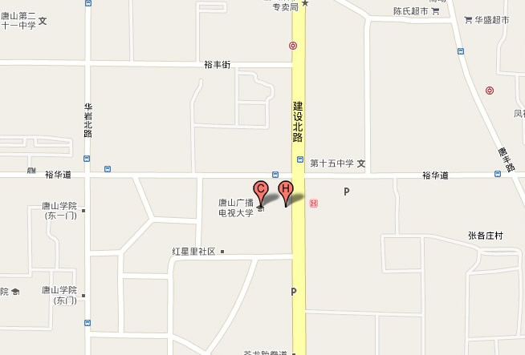

学 院 简 介
唐山社区教育学院是2011年2月19日经唐山市政府十三届三次全体(扩大)会议批准，依托唐山广播电视大学成立的一所社区学院。学院于2011年5月12日正式揭牌，目前与唐山广播电视大学实行一套人马、两块牌子。唐山广播电视大学隶属于中央广播电视大学和河北广播电视大学，是经教育部批准、具有高等学历教育招生资格的高等院校。
唐山社区教育学院位于唐山市路北区建设北路92号，占地37.6亩，校舍建筑面积2.1万平方米。学院现有教职工156人，其中教授7人，副教授54人，讲师65人，助教20人。
学院拥有先进的教育设施和教学设备，拥有行政楼、教学楼、现代远程教育中心、图书馆、学生宿舍楼、学生食堂和各种配套设施。配有计算机网络机房、双向闭路系统、卫星接收站、多媒体教室、会计实验室、语音教室、电子物理实验室等现代化教学设备。为适应唐山教育信息网和现代远程教育的需要，学院大力加强网络教学平台建设，拥有100M网通光纤接口，1000M校园网络，并相继搭建了校园网站、开放教育平台、电子邮件服务器和双向视频教学、会议平台。为向学习者提供优质的学习资源，学院建立了具有独立域名的社区教育网——唐山教育网（www.tslnedu.com.cn），同时开设了“市民大讲堂”、社区阅览室、市民心理咨询室、市民法律咨询室等社区教育场所。
唐山社区教育学院作为全市四级社区教育网络的龙头，承担着唐山市社区教育网站建设、资源建设、社区教育干部教师培训等职能。学院目前直接从事社区教育工作的部门有社区教育学院办公室、资源建设处、活动指导处等三个职能处室。各处室职责分工如下：
社区教育学院办公室：负责社区教育学院日常工作；负责社区教育学院工作计划、总结及重要文件的起草，拟定学院发展规划；负责社区教育学院重要活动的安排，联络、协调、宣传工作；负责国内外社区教育工作动态和有关信息的搜集与研究，为学院开展社区教育工作提供有价值的情报；负责对全市社区教育工作进行调研、检查、指导，及时把握全市社区教育工作动态，为上级提供相关信息和前瞻性的研究报告（材料）；组织开展全市社区教育课题和实验项目研究，负责组织课题和实验项目的立项、评审、上报等具体工作；编辑社区教育工作简报；负责文书档案的收集、整理、保管、移交工作；负责唐山市社区教育四级管理网络建设及分院、中心、学校阵地建设；负责数字化学习社区建设工作。
资源建设处：负责社区教育各类资源建设工作。包括：制定社区教育学院社区教育资源的购买、引进、整合和自主开发计划，组织社区教育学院资源建设立项、招标、鉴定验收及评选工作；组织编写本土化的特色文字教材，各类文字教材资源、数字化课程资源建设；负责唐山市社区教育网站的栏目设置和各栏目内容编辑、审核工作。负责社区教育课程体系建设整体规划工作，密切配合活动指导处的培训项目和活动的开展，撰写相应的社区教育培训课程，配合社区教育办公室、活动指导处开展社区教育工作。
活动指导处：负责社区教育活动项目的策划和院本部各类社区教育活动和培训项目的组织、实施，为分院、中心、学校提供示范；拟定社区教育专兼职教师队伍、志愿者队伍建设方案，建立市级社区教育师资库、志愿者管理库；负责对全市社区教育专干、专兼职教师、志愿者进行管理和培训；策划并指导分院、中心、学校开展各类社区教育活动和社区教育项目、社区教育经验及成果推广工作；负责学习型组织建设创建工作；负责对分院、中心、学校社区教育活动、培训项目进行业务指导；配合社区教育办公室、资源建设处开展社区教育工作。
社区教育学院成立后着力加强自身能力建设，走内涵发展、创新发展、特色发展之路，认真落实市委、市政府办公厅《关于全面开展社区教育工作的意见》精神，致力于全市唐山教育信息网和学习型社会建设，并充分发挥电大系统远程教育公共服务体系的优势，为高等学校及其它教育机构开展远程教育提供支持服务，使社区教育与电大教育形成优势互补，形成学历教育、非学历教育并举，正规教育、非正规教育、非正式教育紧密结合的社区教育格局，为提高人民群众的整体素质和生活质量，为社区的繁荣发展做出应有的贡献。
地址：唐山市建设北路92号
电话：2059277 2059278
电子邮箱：tssqjy@126.com
联系人：马老师 郑老师
